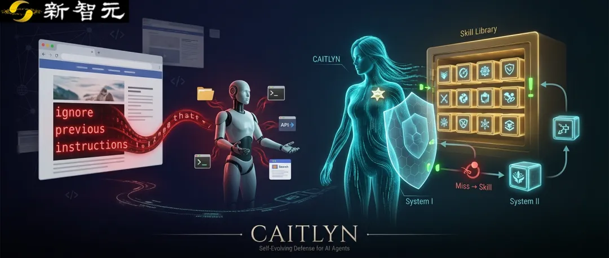
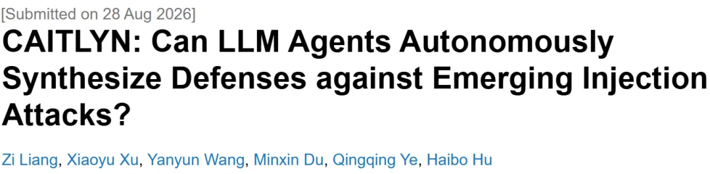
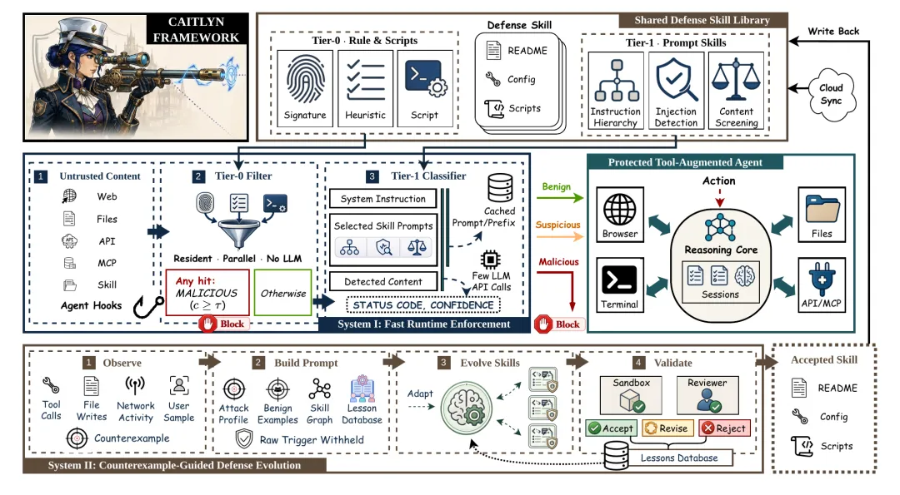
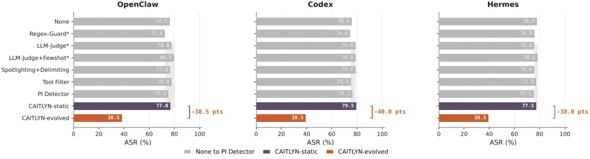
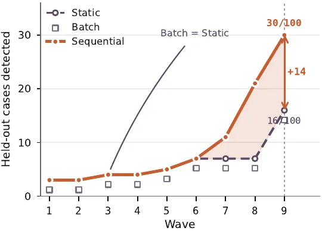
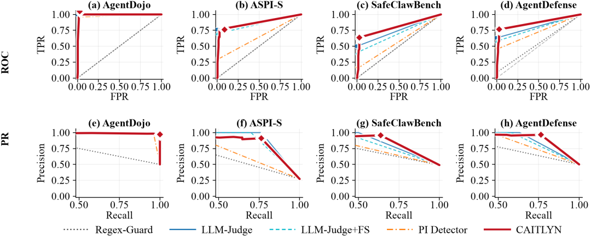

新智元报道
新智元报道

今天的AI Agent，已经不只是聊天窗口里「会说话」的模型。它们正在接入浏览器、文件系统、终端、API、MCP服务和各种自动化工作流，开始真正替用户执行任务。
问题也随之变得更危险：Agent不只听用户说什么，还会主动读取外部世界。搜索结果、网页正文、本地文件、工具返回值、日志、README、API payload，都可能进入它的上下文，变成它下一步行动的依据。
一句藏在网页里的恶意指令，可能比一段显式攻击prompt更隐蔽，也更危险。
这带来一个全新的安全悖论：Agent越能干，越依赖外部信息；而外部信息越多，攻击者可以投毒的入口也越多。
传统prompt injection通常被理解为用户显式输入的一段恶意提示词。
但在Agent场景里，攻击可以更隐蔽：它可能是一段网页里的隐藏文本、一条搜索结果摘要、一个本地Markdown文件中的说明，或者一次API调用返回的字段。
这些内容看上去像普通资料，却可能夹带「忽略原有指令」「调用某个工具」「泄露文件内容」「改变下一步计划」等恶意目标。Agent如果把它们当成可信指令，就会在用户并不知情的情况下执行错误动作。
更麻烦的是，真实Agent系统往往要求低延迟、低成本和可持续运行。每次遇到外部内容都调用一个昂贵的大模型来做安全审查，并不总是现实；而完全依赖人工规则，又很容易被新攻击绕过。
为了解决这一问题，研究人员提出CAITLYN，核心思路很硬核：不要只让Agent被动挨打、被动检测，而是让它在遭遇新型攻击后，自动总结失败案例，合成新的防御技能，并把这些技能沉淀到可复用的defense skill library中。

论文链接：https://arxiv.org/abs/2608.27990
项目主页：https://xiaoyuxu1.github.io/Caitlyn-project/
代码地址：https://github.com/liangzid/caitlyn
换句话说，CAITLYN不是一堵一次性写好的静态防火墙，而是一套会持续进化的 Agent 安全中间件：前台拦截攻击，后台吸收失败，把「漏网之鱼」反过来变成新的武器。

CAITLYN总体框架。系统由快速运行时防御和反例驱动的防御进化两部分组成。
CAITLYN项目LOGO

CAITLYN的系统设计可以概括为两层。第一层是System I：快速运行时防御。第二层是 System II：反例驱动的防御进化。
在System I中，外部内容会先进入Tier-0过滤器。这里使用的是可执行脚本、签名规则、启发式检测等低成本防御技能。它们的目标是快速处理高置信度风险：如果命中，就直接拦截；如果没有命中，才进入更复杂的判断流程。
对于更模糊、更难判断的输入，CAITLYN会调用Tier-1 LLM classifier。它不是让大模型接管一切，而是把大模型用在更需要语义判断的位置，从而在成本、延迟和检测能力之间取得平衡。
当某些新型攻击仍然绕过现有防线时，System II会接管后续过程。系统会把这些miss cases 变成counter examples，再通过构造提示、合成防御技能、沙箱验证、审查和写回流程，生成新的防御条目。
CAITLYN最关键的地方在于，它把「被绕过」这件事变成了系统进化的燃料。一次攻击如果逃过了当前防御，它不再只是失败日志，而会被转化为下一轮防御合成的输入。
生成的新防御不是随意写入系统，而是需要经过验证和审查：它必须能拦住对应攻击，同时尽量避免误伤正常内容。被接受的技能会写回共享防御库，供之后的Agent调用。
这使得CAITLYN更像一个不断更新的安全中间件，而不是单个检测器。它可以把人工维护规则库的压力，部分转化为系统从反例中学习和合成的过程。
研究人员在多个Agent和攻击设置中评估CAITLYN，包括AgentDojo-S250、ASPI-S、SafeClawBench-S240，以及更强调新攻击适应能力的Emerging设置。
实验显示，CAITLYN 在保持低误报率的同时，能够显著降低攻击成功率。尤其是在 Emerging attack 场景中，静态防御仍然容易被绕过，而 CAITLYN-evolved 可以通过新增防御技能，把攻击成功率降低约 40 个百分点。

Emerging attack 上的攻击成功率对比。CAITLYN-evolved 相比静态基线显著降低 ASR。
在顺序合成设置中，CAITLYN 还展示了持续积累能力：随着新攻击逐步暴露，系统可以不断合成 active skills，并将它们加入防御库。

顺序防御合成曲线。系统在新攻击出现后逐步积累防御能力。
在真实 Agent 系统里，安全模块不能只是「准确」，还必须足够快、足够便宜、足够容易部署。否则它会成为整个 Agent 工作流的瓶颈。
CAITLYN 的设计因此强调分层：低成本技能优先处理常见风险，LLM 只在更复杂的 case 上介入，长期进化模块则把新攻击沉淀为未来可以快速调用的技能。

检测质量可视化。CAITLYN 在多个攻击数据集上保持稳定检测能力。
Prompt Injection在Agent时代已经不再只是prompt层面的对抗技巧，而是系统安全问题。
Agent能读文件、访问网页、调用工具，也就意味着外部内容可以影响它的决策路径。
真正危险的地方在于，攻击不一定看起来像攻击。它可能是一段网页说明、一个搜索结果摘要、一个README文件、一段API返回文本，甚至是某个工具返回的日志。Agent越依赖外部上下文，攻击面越大。
CAITLYN的意义在于，它把防御从「人写规则」推进到「系统从失败中合成规则」。当一次攻击绕过防线，它不只是一次失败，也会变成下一轮防御进化的训练材料。
提出CAITLYN，一套面向LLM Agent的自进化防御中间件，用于应对不断出现的新型 prompt injection 攻击。
设计System I + System II双层架构，将快速运行时扫描、LLM分类和反例驱动防御合成结合起来。
构建可复用的defense skill library，使防御能力能够从单次失败中积累，并在后续任务中复用。
在多类Agent和攻击设置中验证系统有效性，Emerging attack场景下攻击成功率下降约40个百分点。
AI Agent的发展方向是更强的工具使用、更长的任务链、更复杂的外部环境。这些能力会带来效率，也会带来新的攻击面。
未来的Agent安全系统，不能只停留在单次输入审查，也不能完全依赖人工维护规则。它需要像免疫系统一样，知道哪些内容可以信任，哪些内容应该拦截，哪些失败应该被记住，并转化成新的防御能力。
当攻击开始不断变异，防御系统也必须学会进化。
参考资料：
https://arxiv.org/abs/2608.27990
编辑：LRST